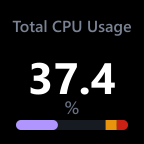
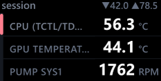
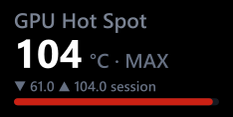
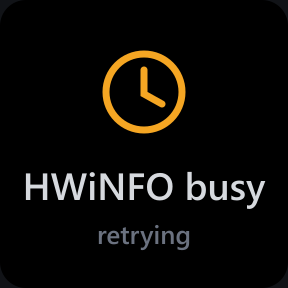

It tells you when it is wrong
If HWiNFO stops publishing, a key does not keep showing its last number. Within 15 seconds it names the problem and the fix. All status screens


HWiNFO Sensors for Elgato Stream Deck
HWiNFO Sensors puts live readings from HWiNFO on your Stream Deck: temperatures, clock speeds, fan RPM, usage and power, on keys and on the dials of the Stream Deck + and + XL. Free and open source.
Windows 10 or later, x64Stream Deck 6.9+HWiNFO, free or Pro

Every face below is real output from the plugin's own renderer, cropped from the project's documentation. The readings are fixed examples from the author's machine.
A key holds one reading with a sparkline, bar or ring, or two, three or four readings. Compare how legible each stays; the small copy is roughly key-sized on a desktop monitor.




Example values, rendered by the plugin. This page does not read your hardware.
Set a warn and a critical value. Past either, the whole key turns amber or red. Those two colours are the same on all seven themes, so an alert never depends on which theme you picked or on colour vision alone: the field changes, not just a hue.


If HWiNFO stops publishing, a key does not keep showing its last number. Within 15 seconds it names the problem and the fix. All status screens
Rotate to step through readings, push to reset the session min and max, touch to cycle the stat. A dial can also list its rotation set as two or three rows.




.streamDeckPlugin file from GitHub Releases.Free HWiNFO turns Shared Memory off after 12 hours; with Gadget reporting enabled the plugin falls back to it and switches back on its own. HWiNFO is a separate program by REALiX and is not bundled.
Four habits from HWiNFO Sensors, each with the place you can check it.
Hardware support is published at four levels: physically verified, simulated against the SDK, verified by a user, or expected to work with stated limits. Only one device is claimed as physically verified.
Every failure state has its own screen that names the cause and the fix.

Status screensOne poll of 548 live readings decodes in 8.5 µs on average over 1,000 runs, on one machine. The performance log names the harness behind every figure.
The native bridge has no code-signing certificate, so every release since 1.4.0 prints its SHA-256. 1.6.0: 57fdf219…
Systems engineer. I build tools I needed and ship them.
slawrensen is where that work is published. HWiNFO Sensors is the first public release: I design it, write it, test it on my own Stream Deck + XL, document it, and answer its issues. There is no team behind it and no company pretending to be one.
It is a ground-up TypeScript rewrite on Elgato's official SDK, inspired by shayne's original Go plugin; no code is shared (credits).